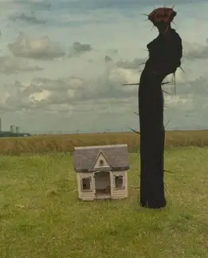

Description:
The Boiled One is an entity that by itself isn't real. He is some sort of anomalous entity that spreads through your mind once first seen. If you view the specific broadcast of him talking, you will start to feel like you cannot get the face out of your mind, and it slowly consumes you. Until one day, you won't be able to move any part of you besides your eyes or blink. You will then start seeing the entity but won't be able to do anything about it. The Boiled One is a tall, humanoid-looking entity with a burned, melted-looking face, a wide smile, and a weird organ at the center of his torso.